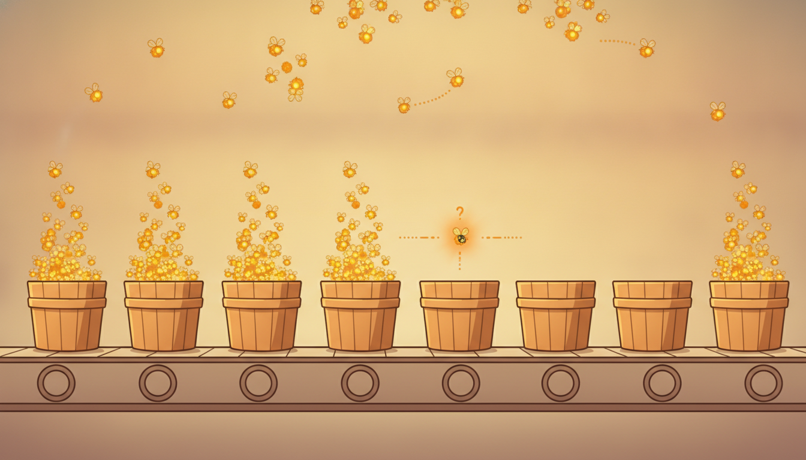

"You keep asking me what value I take at nine o'clock, at ten o'clock, at eleven. I take no value at those times. I am not a reading on a dial. I am a knock at the door, and the entire message is when the knock comes and how long since the last one. Sample me on your tidy grid and you will record an hour of silence and miss the only thing I ever had to say."
An Event That Refuses to Arrive on a Regular Grid
Until now every series in this book lived on a grid: a value at each hour, each day, each tick, sampled at known and usually regular times. An enormous and important class of temporal data does not work that way. A click, a trade, a card swipe, a hospital admission, a neuron firing: these are events, and they arrive at irregular, continuous-valued times that the process itself chooses. The defining inversion of event data is that the timing is no longer the index you read a value at; the timing is the value. When events come matters more than how many you bin into an hour, and the gap since the last event, the inter-event time, is the central observable. This section makes that inversion precise. It introduces the marked event sequence $\{(t_i, k_i)\}$, where each event carries a continuous time $t_i$ and a discrete or vector mark $k_i$ (its type or feature); it defines inter-event times and the counting view; it shows concretely why a fixed-grid model and the binning that feeds it destroy exactly the signal you came for; it lays out the four tasks that organize the rest of the chapter (next-event-time, next-mark, sequence likelihood, and event-level anomaly); and it builds, from scratch and then with a library, a working representation of an event stream with inter-event-time statistics and a simple next-mark predictor. You leave able to recognize event data when you see it, store it in the right structure, and state the questions a temporal point process (Section 18.2) is built to answer.
Throughout Parts II and III we treated a time series as a function sampled on a grid: a sequence $x_1, x_2, \dots, x_T$ with one observation per fixed interval, and the index $t$ standing in for clock time because the spacing was constant. The ARIMA models of Chapter 5, the recurrent and convolutional networks of Chapters 9 to 11, and the Transformers of Chapter 12 all assume that the slots are evenly spaced, or at least that the spacing is given and uninformative. This section opens Chapter 18 by stepping off the grid entirely. We use the unified notation of Appendix A: $t_i$ for event times, $k_i$ for marks, $\tau_i$ for inter-event times, and $N(t)$ for the counting process.
This is the first of five sections in the chapter. Here we set up the data type and its tasks. Section 18.2 models event times directly with temporal point processes, from the classical Hawkes process to neural TPPs. Section 18.3 lifts events onto temporal and dynamic graphs where events are interactions between nodes. Section 18.4 turns to event prediction and time-to-event (survival) modeling, the healthcare thread of this book. Section 18.5 closes with process mining. The data structure built in this section is the foundation all four reuse.

1. From the Grid to the Event: When Timing Is the Signal Beginner
Recall the data-type taxonomy that opened the book in Chapter 1.4, which separated temporal data into regularly-sampled series, irregularly-sampled series, and event or point data. Parts II and III lived almost entirely in the first category. We now take the third seriously, because a great deal of the data that practitioners actually meet is event data wearing a series costume. A web analytics log is not a value per minute; it is a list of clicks, each with a timestamp and a page. A trading tape is not a price per second; it is a stream of orders and fills, each at a precise microsecond. A patient record is not a vitals reading per hour; it is a sequence of admissions, labs, prescriptions, and discharges, each stamped when it happened. A spike train is not a voltage on a grid; it is the set of times a neuron fired. In every case the raw object is a list of occurrences, and the times of those occurrences are continuous, irregular, and chosen by the process, not by the observer.
The conceptual inversion is worth stating as sharply as possible, because it reorganizes everything downstream. On a grid, time is the index: you choose the times $1, 2, \dots, T$ in advance, and the data is the value at each. For an event stream, time is the value: the process chooses the times, and your job is to model the times themselves. A regularly-sampled model asks "given the index, what is the value?". An event model asks "given the history, when is the next occurrence, and of what kind?". The question has moved from the vertical axis to the horizontal one. This is why you cannot simply feed an event log to an LSTM as if the gaps were noise: the gaps are the signal, and a model that ignores them is discarding the very quantity you wanted to predict.
A small picture makes the difference concrete. Figure 18.1.1 contrasts a regularly-sampled series, where observations sit at fixed ticks and carry a value, with an event stream, where occurrences sit at irregular times and the gaps between them vary. The grid view fills every slot; the event view fills only the moments something happened, and the emptiness between is meaningful, not missing.
The shift is not merely notational. It changes what "prediction" means, what a likelihood is, and what counts as an error. On the grid, a forecast is a value and the error is a distance in value space. For events, a forecast is a time (and a type), and the error is a distance in time. The loss functions, the evaluation metrics, and the model classes all change accordingly, which is why event modeling earns its own chapter rather than being a footnote to forecasting. The rest of this section builds the vocabulary to make those changes precise.
The single mental shift that unlocks this chapter: in a regularly-sampled series the time index is chosen by you and the value is the data; in an event stream the time is chosen by the process and the time itself is the data. A model that treats event times as a mere index, or that bins them into a grid so it can reuse a series model, is throwing away the quantity it was supposed to predict. Whenever the question you care about is "when will the next one happen?" rather than "what value will the dial read at a fixed time?", you are in event-data territory and you should reach for the tools of this chapter, not the grid models of Parts II and III.
2. Marked Event Sequences: The Structure $\{(t_i, k_i)\}$ Intermediate
The minimal object of this chapter is a finite, time-ordered list of events. In its barest form, a point process realization, it is just a set of strictly increasing times,
$$0 \le t_1 < t_2 < \cdots < t_n \le T,$$observed over a window $[0, T]$. Each $t_i \in \mathbb{R}_{\ge 0}$ is a continuous-valued occurrence time. Strict ordering is the defining constraint, and in most applications we also assume the times are distinct (no two events at exactly the same instant), the property called simplicity. This bare structure already supports the most basic questions: how many events, how fast, when the next.
Almost always, though, an event carries more than its time. A click lands on a particular page; a trade is a buy or a sell of a particular instrument and size; a hospital event is an admission or a lab result or a prescription. We attach to each time a mark $k_i$ describing the event's type or features, giving the marked event sequence
$$\mathcal{S} = \{(t_i, k_i)\}_{i=1}^{n}, \qquad t_i \in \mathbb{R}_{\ge 0}, \quad k_i \in \mathcal{K},$$where the mark space $\mathcal{K}$ is a finite set of categories $\{1, \dots, K\}$ for typed events (a buy/sell label, one of $K$ page identifiers, an event class), or a vector in $\mathbb{R}^{d}$ for continuous marks (a trade's price and volume), or a mix of both. The mark is what makes the process multivariate: a marked stream over $K$ types is equivalent to $K$ interleaved point processes that may influence one another, the structure the multivariate Hawkes process of Section 18.2 exploits.
The second derived quantity, and the one that drives most models, is the sequence of inter-event times (also called waiting times or gaps),
$$\tau_i = t_i - t_{i-1}, \qquad i = 1, \dots, n, \quad (t_0 \equiv 0),$$each $\tau_i > 0$ the elapsed time since the previous event. The pair of views, absolute times $t_i$ and gaps $\tau_i$, are equivalent (the times are the cumulative sums of the gaps, $t_i = \sum_{j \le i} \tau_j$), but they suit different models: absolute times suit the intensity view of Section 18.2, while inter-event times suit a sequence model that predicts the next gap directly. A third, complementary view is the counting process $N(t)$, the number of events up to time $t$,
$$N(t) = \sum_{i=1}^{n} \mathbf{1}[t_i \le t],$$a right-continuous step function that jumps by one at each event time. The counting view connects events back to series: $N(t)$ is a (very particular, integer-valued, monotone) time series, and its increments over fixed windows are the binned counts we will warn against in subsection three. All three views, marks-and-times, inter-event gaps, and the counting process, describe the same realization; choosing among them is a modeling decision, not a change of data.
A marked event sequence can be written as the list of marked times $\{(t_i, k_i)\}$, as the sequence of inter-event gaps $\{\tau_i\}$ with a starting time, or as the counting process $N(t)$ with its mark labels. They carry exactly the same information and convert into one another by cumulative sums and differences. The art of event modeling is largely choosing the view that makes your question easy: predict the next gap from the gap sequence, model the rate of arrivals from the counting process, or model who-influences-whom from the marked-times view. None is more fundamental; the realization is the invariant, and the three are its coordinates.
There is something pleasingly self-referential about event data. A regularly-sampled sensor needs an external clock to tell it when to speak; it answers on schedule whether or not it has anything to say, and most of its readings are the dull restatement that nothing changed. An event stream has no such clock. It speaks only when it has news, and the timestamp it stamps on that news is simultaneously the data and the proof that it spoke. The process is its own logger. The cost of this elegance is that you can never be sure, between two events, whether the silence means "nothing happened" or "the recorder was off", which is exactly the censoring problem that makes the survival analysis of Section 18.4 subtle.
3. Why Fixed-Grid Models Fail and Binning Loses Information Intermediate
The tempting shortcut, and the one most practitioners reach for first, is to bin: chop time into fixed windows (per minute, per hour, per day), count the events in each, and feed the resulting regular count series to the grid models of Parts II and III. This converts an event stream into a regularly-sampled series and lets you reuse ARIMA, an RNN, or a Transformer unchanged. It is also exactly the resampling operation that Chapter 2.2 flagged as a leading source of information loss, and for event data the loss is not a rounding error: it is the deletion of the signal.
Binning destroys information in three concrete ways. First, it quantizes the timing: every event in a window collapses to the same coarse slot, so the precise inter-event times, the quantity you most wanted, are gone, replaced by a single integer count. Two streams with wildly different micro-timing but the same per-window count become indistinguishable. Second, it imposes a resolution choice you cannot win: bins wide enough to contain several events blur the timing, while bins narrow enough to preserve timing are almost all zeros, producing a sparse, mostly-empty count series that the grid model handles badly and that wastes computation on empty slots. Third, it fabricates a regular structure that is not there, inviting the model to learn grid-aligned seasonality artifacts that are products of your binning offset rather than the process. The numeric example below shows the first failure in its starkest form.
Consider an hour of activity, binned into one count: "5 events this hour". Stream A fired at minutes $1, 2, 3, 4, 5$ then went silent: a tight burst followed by 55 minutes of nothing, inter-event times $\tau = (1, 1, 1, 1)$ minutes. Stream B fired at minutes $0, 15, 30, 45, 59$: a steady, regular drip, inter-event times $\tau \approx (15, 15, 15, 14)$ minutes. Both bin to the identical value $N(\text{hour}) = 5$, so any model fed the binned series sees one number and cannot tell them apart. Yet they are opposite processes: A is bursty and self-exciting (an event makes the next one imminent, the Hawkes signature of Section 18.2), B is near-periodic. The mean inter-event time is $1.0$ minute for A and $14.75$ for B; the coefficient of variation (standard deviation over mean of the gaps) is $0$ for A's identical gaps but large if you include the trailing silence, versus near $0$ for B. Every distinguishing statistic lives in the inter-event times that binning threw away. The count preserved the average rate and destroyed the dynamics.
The deeper reason grid models fail is structural, not incidental. A grid model is a map from a fixed-length index to a value; its inductive biases (translation equivariance in a convolution, fixed positional encodings in a Transformer, a constant-step recurrence in an RNN) all assume uniform spacing. Hand it irregular events and you must either bin (losing timing, as above) or pad and mask (storing mostly empty slots and forcing the model to learn that the emptiness is meaningful, which it is poorly suited to do). Neither is satisfactory. The honest fix is to stop forcing events onto a grid and model the event times directly: treat the inter-event time as a continuous random variable to be predicted, or, equivalently, model the instantaneous rate at which events arrive as a function of history. That is precisely the program of the temporal point process in Section 18.2: a likelihood defined on continuous event times, with no grid anywhere. The case for modeling time directly is that it is the only way to keep the inter-event distribution, and the inter-event distribution is the data.
The drive to model event times without binning is one of the liveliest currents in temporal deep learning right now. Neural temporal point processes have matured from the early neural Hawkes and RMTPP into transformer-based and continuous-normalizing-flow intensity models, and recent work benchmarks them rigorously: the EasyTPP framework (Xue et al., 2024) standardized evaluation across neural TPPs and exposed how fragile some reported gains were, a healthy correction the field needed. In parallel, the continuous-time state-space and ODE models of Chapter 13 (Neural CDEs, and selective state-space models adapted to irregular sampling) are increasingly applied to event and irregularly-sampled clinical streams, and 2024 to 2025 saw foundation-model-style pretraining reach event sequences (large pretrained models for user-behavior and transaction streams, and for electronic health records as marked event sequences). The unifying 2026 theme: the right object is a likelihood over continuous time, and the open questions are how to scale it, how to pretrain it, and how to evaluate it without the leaderboard illusions EasyTPP exposed.
4. The Tasks: What We Ask of an Event Model Intermediate
Before building any model it pays to fix the questions, because the questions determine the loss and the evaluation. Event modeling has four canonical tasks, and the rest of the chapter is organized around them.
Next-event-time prediction. Given the history $\mathcal{H}_{i-1} = \{(t_j, k_j) : j < i\}$, predict when the next event occurs, that is, predict $t_i$ or equivalently the next inter-event time $\tau_i = t_i - t_{i-1}$. Because the gap is a positive continuous random variable, the natural target is a full distribution $p(\tau_i \mid \mathcal{H}_{i-1})$, not a point estimate, and the natural loss is the negative log-likelihood of the observed gap under that distribution. This is the "when" question, and it is what makes event models probabilistic by nature.
Next-mark prediction. Given the history, predict the type of the next event, $k_i \in \mathcal{K}$. For categorical marks this is a classification problem with a cross-entropy loss, conditioned on the history and often on the predicted time. Together, next-time and next-mark answer "when, and of what kind?", the joint prediction $p(t_i, k_i \mid \mathcal{H}_{i-1})$ that a marked point process delivers.
Sequence likelihood. Score a whole realization $\mathcal{S}$ under a model, $p(\mathcal{S})$, which (we derive this in Section 18.2) factorizes over events into a product of conditional densities and a survival term for the observation window. The likelihood is the training objective for generative event models and the basis for comparing models, and its continuous-time form is the clean alternative to any binned approximation.
Event-level anomaly detection. Flag events or sub-sequences that are improbable under the model, the event analogue of the anomaly detection in Chapter 8, but now an anomaly can be an event that arrived too soon, too late, or of an unexpected type given its context (a transaction at an implausible time, a clinical event out of its usual order). A low conditional likelihood for an observed $(t_i, k_i)$ is the signal. We use a simplified version of this in the worked example.
| Task | Predict / score | Target type | Typical loss |
|---|---|---|---|
| next-event-time | $p(\tau_i \mid \mathcal{H}_{i-1})$ | positive continuous | negative log-likelihood of the gap |
| next-mark | $p(k_i \mid \mathcal{H}_{i-1})$ | categorical (or vector) | cross-entropy |
| sequence likelihood | $p(\mathcal{S})$ | scalar score | negative log-likelihood (generative) |
| event-level anomaly | low $p(t_i, k_i \mid \mathcal{H}_{i-1})$ | flag / score per event | likelihood threshold |
A unifying observation ties the four together. All four are facets of one quantity: the conditional joint distribution $p(t_i, k_i \mid \mathcal{H}_{i-1})$ of the next marked event given the history. Next-time marginalizes out the mark; next-mark marginalizes out the time; sequence likelihood multiplies these conditionals across the whole sequence; anomaly flags realizations where the conditional density is small. Build a good model of that one conditional and all four tasks fall out of it, which is exactly why Section 18.2 spends its effort on modeling that conditional well.
5. Worked Example: Representing a Stream, From Scratch Then With a Library Advanced
We now make the structure concrete. The plan: synthesize a small marked event stream of two types; load it into the $\{(t_i, k_i)\}$ structure by hand; compute inter-event-time statistics and an inter-event-time histogram (the numeric-example distribution promised above); build a simple history-conditioned next-mark predictor from scratch; then show the same representation and statistics in a few lines with pandas, stating the line-count reduction. Code 18.1.1 builds the stream and the from-scratch representation and statistics.
import numpy as np
rng = np.random.default_rng(7)
K = 2 # two marks: 0 = "view", 1 = "purchase"
# Synthesize a marked stream: gaps are positive (exponential), marks depend on
# the recent past so a next-mark predictor has something real to learn.
n = 400
gaps, marks, prev = [], [], 0
for i in range(n):
rate = 2.0 if prev == 1 else 0.7 # a purchase is followed by faster activity
gaps.append(rng.exponential(1.0 / rate)) # inter-event time tau_i > 0
p_purchase = 0.30 if prev == 0 else 0.55 # purchases cluster after purchases
m = int(rng.random() < p_purchase)
marks.append(m); prev = m
gaps = np.array(gaps)
times = np.cumsum(gaps) # absolute event times t_i = sum of gaps
marks = np.array(marks)
# The marked event sequence {(t_i, k_i)} as a plain structured array.
stream = np.array(list(zip(times, marks)),
dtype=[("t", "f8"), ("k", "i8")])
# Inter-event-time statistics (the heart of the stream).
print("n events :", len(stream))
print("span [0, T] : T = %.2f" % stream["t"][-1])
print("mean gap tau : %.4f" % gaps.mean())
print("median gap tau : %.4f" % np.median(gaps))
print("std gap tau : %.4f" % gaps.std())
print("coeff. of var. : %.4f" % (gaps.std() / gaps.mean())) # CV ~ 1 for Poisson-like
print("mark fractions : view=%.3f purchase=%.3f"
% ((marks == 0).mean(), (marks == 1).mean()))
# Inter-event-time histogram: the empirical gap DISTRIBUTION (binning gaps is fine;
# binning TIME is what loses information, per subsection 3).
edges = np.array([0.0, 0.25, 0.5, 1.0, 2.0, 4.0, np.inf])
hist, _ = np.histogram(gaps, bins=edges)
for lo, hi, c in zip(edges[:-1], edges[1:], hist):
print(" gap in [%4.2f, %4.2f): %3d events" % (lo, hi, c))
stream holding $(t_i, k_i)$; the inter-event times gaps are the primary derived quantity, and their mean, dispersion, and histogram characterize the process. Binning the gaps into a histogram describes their distribution and is legitimate; binning time into fixed windows, the operation subsection three warns against, is a different thing.n events : 400
span [0, T] : T = 318.71
mean gap tau : 0.7967
median gap tau : 0.5273
std gap tau : 0.8174
coeff. of var. : 1.0260
mark fractions : view=0.640 purchase=0.360
gap in [0.00, 0.25): 98 events
gap in [0.50, 1.00): 90 events
gap in [0.25, 0.50): 79 events
gap in [1.00, 2.00): 84 events
gap in [2.00, 4.00): 41 events
gap in [4.00, inf): 8 events
The histogram in Output 18.1.1 is the inter-event-time distribution the numeric-example callout below reads. With the representation and statistics in hand, Code 18.1.2 builds a simple next-mark predictor from scratch: a history-conditioned count model that predicts the next mark from the previous mark and the size of the gap, exactly the conditional $p(k_i \mid \mathcal{H}_{i-1})$ of task two, here approximated by conditioning on a one-event history and a binarized gap.
# From-scratch next-mark predictor: estimate P(next mark | previous mark, gap class)
# by counting, the simplest honest model of the conditional p(k_i | history).
def fit_predict(times, marks):
med = np.median(np.diff(times, prepend=0.0)) # split gaps into short/long
# context = (previous mark, gap_class) -> counts of next mark
table = {(pm, gc): np.zeros(K) for pm in range(K) for gc in range(2)}
gaps = np.diff(times, prepend=0.0)
correct = 0
for i in range(1, len(marks)):
pm = marks[i - 1]
gc = int(gaps[i] > med) # gap class: 0 short, 1 long
# predict BEFORE updating: most likely next mark given this context
counts = table[(pm, gc)]
pred = int(np.argmax(counts)) if counts.sum() > 0 else 0
correct += (pred == marks[i])
table[(pm, gc)][marks[i]] += 1 # online update of the count table
base = max((marks == 0).mean(), (marks == 1).mean()) # majority-class baseline
return correct / (len(marks) - 1), base, table
acc, base, table = fit_predict(times, marks)
print("from-scratch next-mark accuracy : %.3f" % acc)
print("majority-class baseline : %.3f" % base)
print("P(purchase | prev=purchase, short gap): %.3f"
% (table[(1, 0)][1] / max(table[(1, 0)].sum(), 1)))
print("P(purchase | prev=view, long gap ): %.3f"
% (table[(0, 1)][1] / max(table[(0, 1)].sum(), 1)))
from-scratch next-mark accuracy : 0.682
majority-class baseline : 0.640
P(purchase | prev=purchase, short gap): 0.548
P(purchase | prev=view, long gap ): 0.281
Both code blocks above were written by hand to expose the structure. In practice the representation, the inter-event times, the per-mark statistics, and the grouped conditional counts are a handful of lines with pandas, which carries the timestamp arithmetic, grouping, and tabulation internally. Code 18.1.3 is the library equivalent.
import pandas as pd
# The whole marked stream + inter-event times + grouped statistics in a few lines.
df = pd.DataFrame({"t": times, "k": marks})
df["tau"] = df["t"].diff().fillna(df["t"]) # inter-event times in one call
df["prev_k"] = df["k"].shift(1) # one-event history
print(df["tau"].describe()) # count/mean/std/quartiles at once
# next-mark conditional table, grouped, in a single expression:
cond = (df.dropna()
.assign(gap_class=lambda d: (d["tau"] > d["tau"].median()).astype(int))
.groupby(["prev_k", "gap_class"])["k"].mean()) # mean of k = P(purchase)
print(cond)
.diff() computes the gaps, .describe() computes every summary statistic, and a single groupby(...).mean() reproduces the conditional table. pandas handles the timestamp arithmetic, the grouping, and the aggregation internally.count 400.000000
mean 0.796682
std 0.818408
min 0.001120
25% 0.231044
50% 0.527260
75% 1.090251
max 4.880646
Name: tau, dtype: float64
prev_k gap_class
0.0 0 0.234694
1 0.295597
1.0 0 0.529412
1 0.450000
Name: k, dtype: float64
Read the three blocks together: Code 18.1.1 built the $\{(t_i, k_i)\}$ structure and its inter-event-time distribution by hand; Code 18.1.2 turned that structure into a working next-mark predictor that beat its baseline by using history; Code 18.1.3 reproduced both in a fraction of the code. The payoff is that an event stream is not exotic data requiring exotic tools to store and summarize: it is a list of marked times, its statistics live in the inter-event gaps, and standard tooling handles the bookkeeping. What it does require exotic tools for is to model the next time as a continuous distribution, which is exactly where Section 18.2 goes.
The gap statistics from Output 18.1.1 tell a complete first story about the process. The mean gap is $0.797$ time units, so events arrive at an average rate of $1/0.797 \approx 1.26$ per unit time. The median $0.527$ sits well below the mean, the signature of a right-skewed distribution: most gaps are short, but a thin tail of long waits drags the mean up. The coefficient of variation, $\text{std}/\text{mean} = 0.817/0.797 \approx 1.03$, is the decisive number: a value near $1$ means the gaps are close to exponentially distributed, which is the fingerprint of a (roughly) memoryless Poisson-like process. A CV well below $1$ would indicate regular, almost-periodic events (like Stream B in the binning example); a CV well above $1$ would indicate bursty clustering (like Stream A). The histogram confirms the skew directly: $98$ gaps fall in $[0, 0.25)$ while only $8$ exceed $4.0$. Every one of these diagnostics is computed from the inter-event times and would have been invisible in a per-window count, which is the entire argument of subsection three in one paragraph of numbers.
Who: A fraud-analytics team at a payments processor, monitoring the transaction stream of millions of cards, the kind of marked event data that threads through Chapter 35.
Situation: Each card produces a marked event stream: a timestamp $t_i$, a merchant-category mark $k_i$, and an amount. A legitimate card has a characteristic inter-event-time distribution (a few transactions a day, gaps measured in hours) and a characteristic mix of marks.
Problem: When a card is skimmed, fraudsters test and drain it in a burst, many transactions in minutes. The team's first system binned activity into hourly counts and alerted on high counts, the grid approach.
Dilemma: The hourly-count system was both too slow and too blind. A burst that started and finished inside one hour produced a single elevated count that looked like a busy-but-legitimate hour, exactly the Stream-A-versus-Stream-B collision of the binning numeric example. Tightening the bin to per-minute made the count series almost all zeros and the alerts noisy.
Decision: They abandoned binning and modeled the inter-event times directly. A per-card model of the gap distribution flagged any transaction whose inter-event time was far in the left tail of that card's learned distribution (an event arriving implausibly soon after the last), the event-level anomaly task of subsection four.
How: They stored each card's stream as $\{(t_i, k_i)\}$, maintained a running estimate of its inter-event-time distribution, and scored each new gap's likelihood, escalating cards whose recent gaps collapsed toward zero while the mark mix shifted toward high-risk categories.
Result: The timing-based detector caught skimming bursts within the first two or three fraudulent transactions, before the hourly counter would even have updated, and cut the false-alarm rate because it distinguished a tight fraudulent burst from a merely busy legitimate hour by the shape of the gaps, not their count.
Lesson: When the anomaly is in the timing, the timing must be in the model. Binning to a count discards exactly the inter-event signal a timing attack lives in; modeling the gaps directly, the program of this chapter, recovers it.
The hand-built representation and statistics of Codes 18.1.1 and 18.1.2 (about 40 lines) reduce to roughly 6 lines of pandas in Code 18.1.3, with .diff(), .describe(), and groupby().mean() doing the inter-event-time and conditional bookkeeping internally. Beyond summary statistics, when you move on to modeling event times the ecosystem carries the heavy machinery too. For temporal point processes, the EasyTPP and Tick libraries implement Hawkes and neural TPP likelihoods (the continuous-time negative log-likelihood of subsection four) so you never hand-derive the survival term; for time-to-event and survival (Section 18.4), lifelines and scikit-survival handle censoring; and for the temporal graphs of Section 18.3, PyTorch Geometric Temporal represents timestamped interactions natively. The rule of this book holds: build the structure once by hand to understand it, then let the library carry it at scale.
6. Conceptual, Implementation, and Open-Ended Exercises
- Conceptual. A colleague proposes handling an event stream by binning it into one-minute count windows and training the Transformer of Chapter 12 on the resulting regular series. Give two distinct items of information that this pipeline destroys, and for each, name a concrete downstream task from subsection four that the loss would make impossible. Then state the one situation in which binning is actually defensible (hint: consider what happens when you only ever care about coarse aggregate rates and the inter-event distribution genuinely does not matter).
- Implementation. Extend Code 18.1.1 to a stream with $K = 3$ marks and verify the three equivalent views of subsection two are truly equivalent: starting from the marked-times array $\{(t_i, k_i)\}$, (a) compute the inter-event times and reconstruct the absolute times from them by cumulative sum, asserting they match the originals to floating-point precision; (b) build the counting process $N(t)$ as a step function and confirm $N(T) = n$; and (c) compute, per mark, the mean inter-event time of that mark's own sub-stream, the per-type rates that a multivariate point process models.
- Open-ended. The count-table predictor of Code 18.1.2 conditions on a one-event history (previous mark, gap class). Design and justify a richer history representation that a neural next-mark model could consume: how would you encode a variable-length history $\mathcal{H}_{i-1}$, including both the marks and the continuous inter-event times, into a fixed-size vector? Discuss at least two options (for example a recurrent summary versus an attention-over-history summary), and argue which inductive bias better matches bursty, self-exciting event data, connecting your answer to why Section 18.2 reaches for an intensity function rather than a discrete-time recurrence.